プログラムの流れ先ほどのプログラムを読んでいきます。各処理の細かいことは追々解説しますので、ここでは簡単に説明します。 ※ここでは独自の言い回しで解説している部分があります。 厳密には意味合いが違っている場合があります。 さてプログラムを読み解くために意識することがあります。 それは「プログラムは基本的に上から下に流れる。」というものです。 これはそのままの意味でプログラムは上から下に処理されていきます。 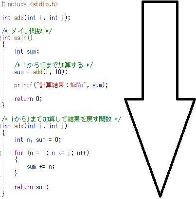 これを前提に読み解いていきます。 C言語における関数C言語は、小さい機能ごとに分割してプログラムを記述します。例えば...
この分割した状態のプログラムを「関数」と呼んでいます。 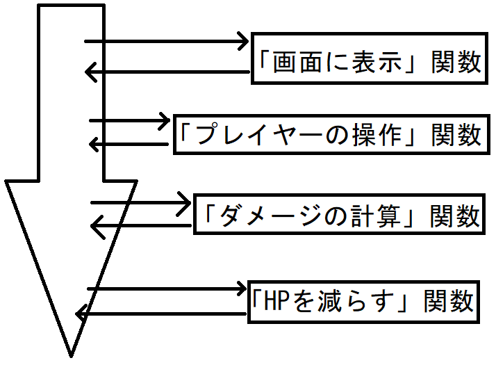 今回のプログラムは次の2つが関数です。 main関数
メイン関数から始まるC言語は「必ずメイン関数から開始」されます。この関数ですね。
「エントリーポイント」とも呼ぶことがあります。 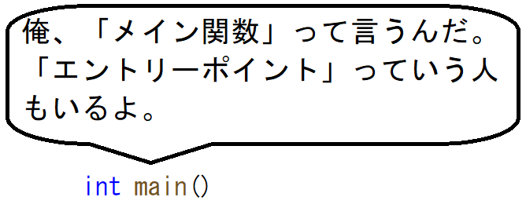 関数の中身は「{」から「}」の間に記述されます。 これを「ブロック」と呼びます。 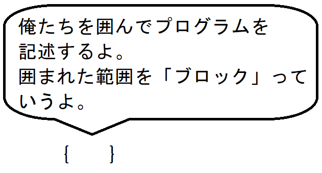 なので、上のプログラムの場合、一番最初に実行される処理は
メイン関数より上の記述メイン関数より上側にある記述について解説していきます。まずは、
便利な関数が初めから用意されています。 中には「画面にテキストを表示する関数」が準備されており、 その関数を使うために、この記述を記載する必要があります。 この記述がないと、画面に表示することができません。 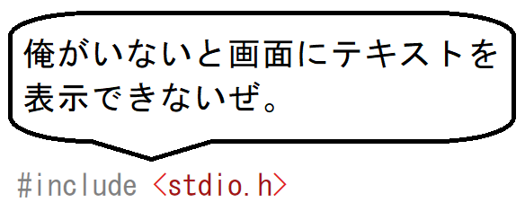 次に、
プログラムは上から下に流れるため、この直後にあるメイン関数は、 「add関数の存在」は知らないことになります。 それを伝えるために、メイン関数の上側にこの記述をすることで、 「下側にadd関数がある」という予告します。 これを「関数のプロトタイプ宣言」と言います。 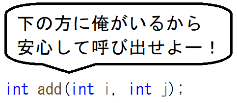 次にある
「/*」から「*/」に囲まれている範囲は何が書かれていても、 コンパイラが無視します。 そのために、何が書かれていても、プログラムの動作には関係ありません。 これは処理の補足説明や注意事項などを記載して、プログラムを 読みやすくします。 メイン関数の中身メイン関数の中身を説明します。最初に実行されるのは、
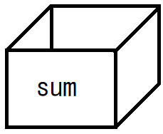
これによって、add関数が実行され、実行された結果が「sum」という箱の中に 入ります。 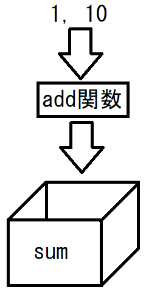
%dのところに、sumの箱に入った中身が表示されます。 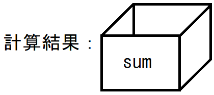
メイン関数を呼び出しているのは「OS」です。 わかりやすい事例として、Visual Studioから実行すると、 最後に次のように表示されている箇所があります。 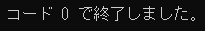 試しに、「0」を「1」に変えて、ビルド・実行してみてください。 次のように変わります。 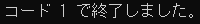 add関数の中身add関数の中身を解説していきます。
それに合わせて、「i」「j」という箱が用意されます。 メイン関数から「1」「10」が渡されていますので、 それぞれの箱に入ります。 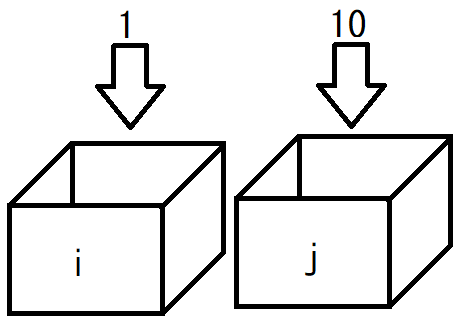
「sum」という箱には「0」が入っています。 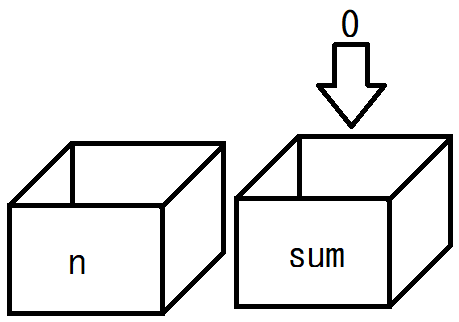
まず、iの中身をnの箱にもコピーします。 iには「1」が入っているので、nも「1」になります。 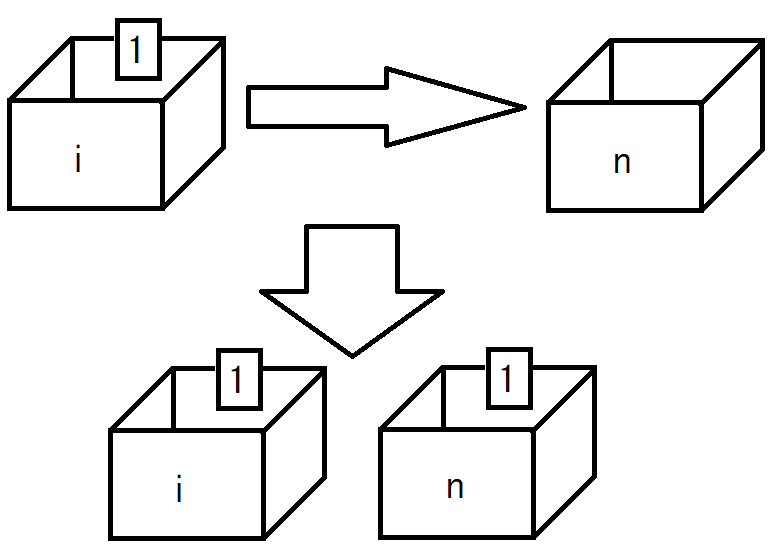 次に、「n」の箱に入っている値が「j」以下である間、処理を繰り返します。 |
|
当Webサイトに記載されている内容は、筆者が独自に調査・研究した内容をまとめています。 そのため、記載されている内容によって、 いかなる損害が発生したとしても、筆者は責任を負いかねますのでご了承ください。 |